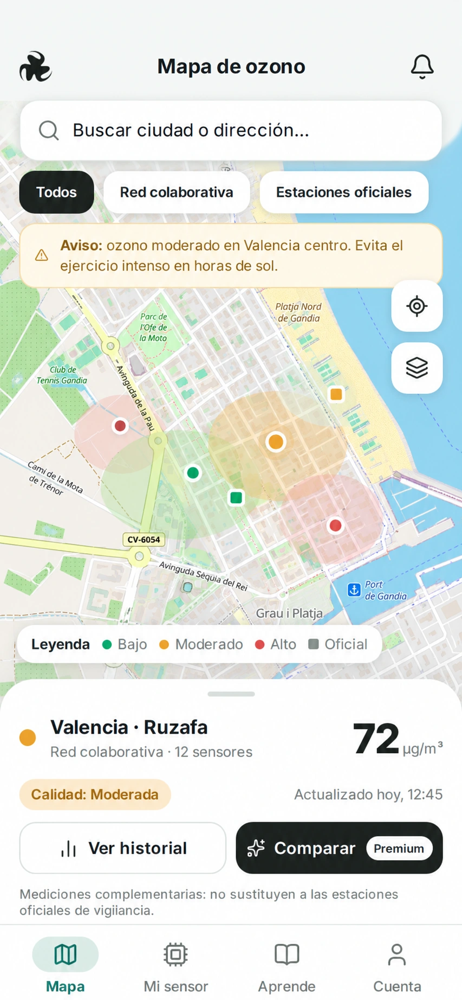

PARTICULARES
Plan personal
Para quienes quieren ir un poco más allá de la consulta pública.
3,99 €/mes
o 39,90 € al año- ✓Históricos ampliados disponibles
- ✓Comparación de zonas
- ✓Alertas personalizadas
- ✓Uso desde web y Android
MONITORIZACIÓN AMBIENTAL
Consulta mediciones ambientales en un mapa claro y descubre cómo un pequeño sensor puede ayudarnos a conocer mejor nuestras ciudades.


EL DISPOSITIVO
El sensor O₃ está pensado para acompañarte en tus desplazamientos. Envía sus mediciones a una aplicación Android mediante Bluetooth y permite contribuir, de forma voluntaria, a un mapa colaborativo.
PLANES Y SERVICIOS
Consulta la información pública gratis. Si necesitas más herramientas, elige la opción que encaja contigo.
PARTICULARES
Para quienes quieren ir un poco más allá de la consulta pública.
ORGANIZACIONES
Supervisa una red de sensores y convierte las mediciones en informes útiles.
PARA REDES DE MAYOR ESCALA
Todo lo esencial para gestionar una red de mayor tamaño.
La compra de sensores físicos es independiente de las suscripciones. Los servicios de pago son opcionales y las funciones esenciales del sensor no se bloquean al cancelar una suscripción.
SOBRE NOSOTROS
AERIQ es un proyecto de monitorización ambiental que combina sensores portátiles, una aplicación móvil y una plataforma web para observar cómo varía el ozono en diferentes lugares.
Queremos acercar la información ambiental a las personas y ofrecer a las organizaciones herramientas para organizar mediciones locales de manera responsable.
El proyecto nace en el ámbito universitario y se está desarrollando por etapas: un sensor portátil de ozono, una aplicación Android que recibe sus lecturas mediante Bluetooth Low Energy y una plataforma web que permite explorar los datos en un mapa. La idea es hacer que la tecnología sea fácil de entender y útil para la ciudadanía.
La participación en la red es voluntaria. Cada persona podrá decidir si comparte mediciones ambientales y su zona aproximada, mientras que universidades, empresas y ayuntamientos podrán plantear campañas de seguimiento en lugares concretos. AERIQ está en fase de prototipo: sus mediciones deberán validarse y no sustituyen los datos de las estaciones oficiales.
¿Tienes preguntas sobre el sensor o te interesa una red de monitorización para tu organización? Cuéntanos qué necesitas.
Proyecto universitario · Grao de Gandia, Valencia, España